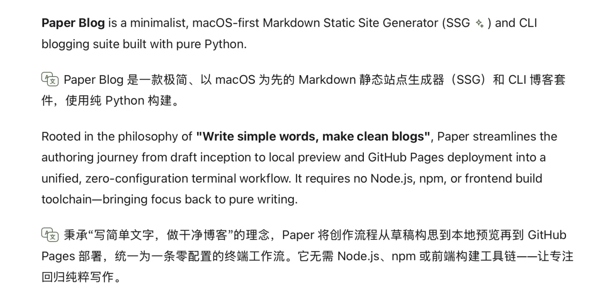
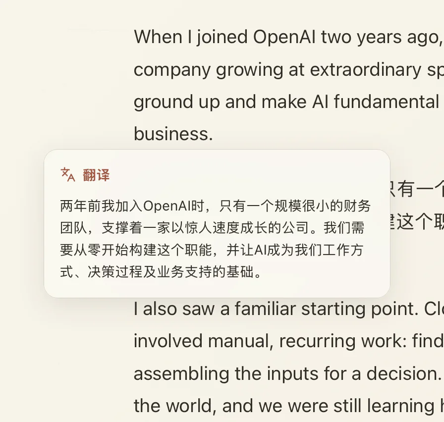
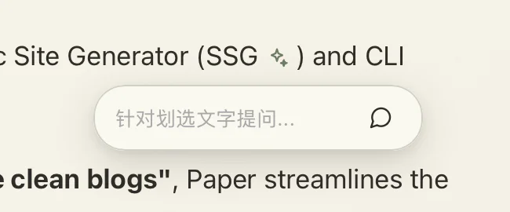
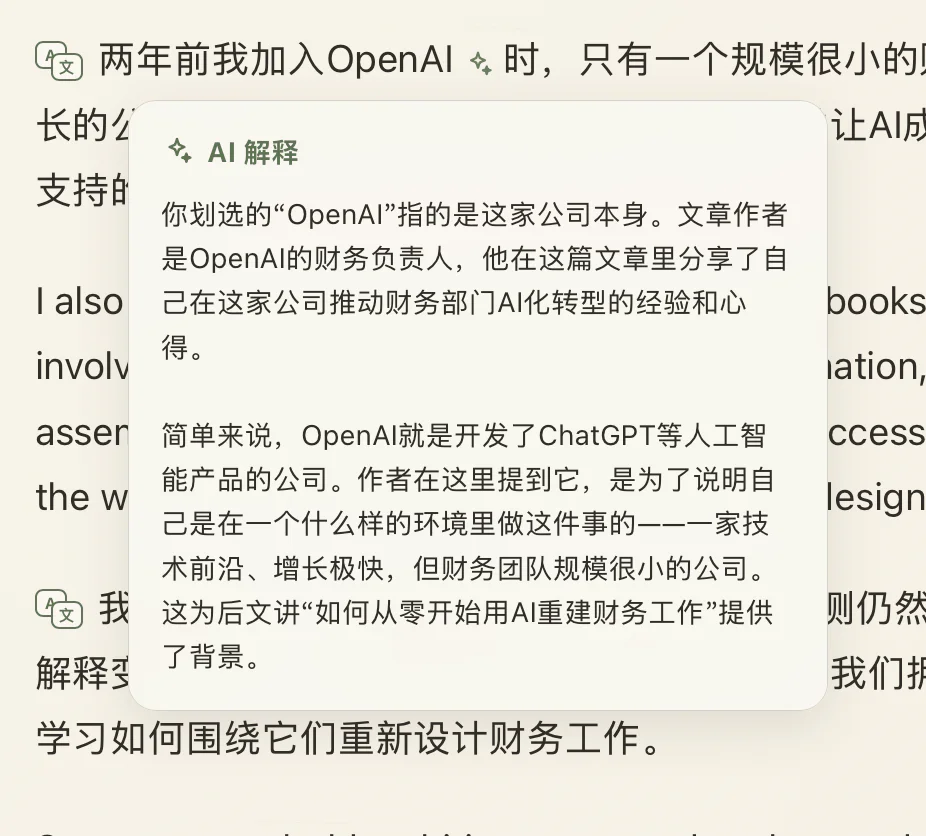

Read slowly, think deeply.
PaperRss is a paper-inspired, bilingual RSS reader with thoughtful AI. Designed natively for macOS to restore a quiet, focused reading ritual.
CORE PHILOSOPHY
FEATURES
EDITORIAL EXPERIENCE
A reading ritual built for beauty and focus
01 / BILINGUAL
Side-by-side translation
Keep each translated paragraph beside its source so long-form reading never loses context.

02 / TRANSLATE
Translate in place
Get a contextual translation for the selected passage without leaving the reader.

03 / EXPLAIN & ASK
Explain & ask
Select a passage to ask a focused question or get unfamiliar terms, ideas, and context explained by AI.


FEEDBACK & SUPPORT
Feedback & Support
PaperRss is independently developed and open source. We welcome your feedback on GitHub, and you can also support continued development via PayPal.
ABOUT